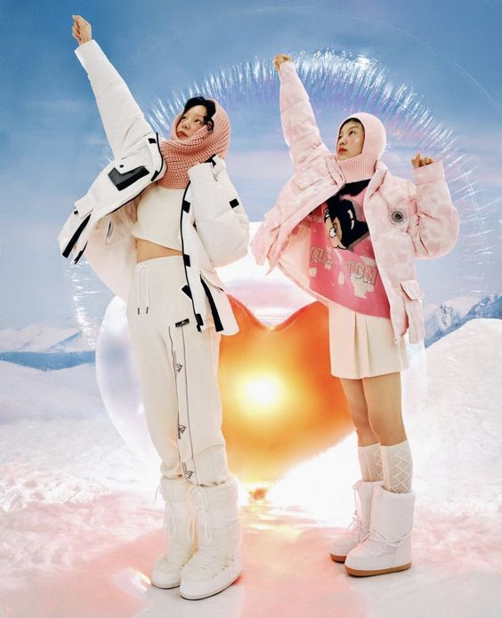

1. My previous experience with coding:
The only class I've taken where I was exposed to HTML/CSS/JS has been Interaction 1.
CSS styling and attaching links resonated with me the most.
I found it confusing to control the placement of flex boxes and working with javascript.
2. I am very excited to learn code and enforce my current knowledge. I'm also quite nervous to work on Visual Studio Code rather than Glitch.
3. I hope to be able to use coding in my projects in the future. I'd like to be able to create websites to pair with physical projects and just have coding as a skill.
4. I think HTML is essentially the content of a webpage. You can add text/images/etc on this part. CSS is where you can change the content on html stylistically - ie. color, font, size.
Javascript isn't required when creating a webpage but it can enhance a webpage by making it more interactive, for example by hiding and revealing elements.
5. I'm still not 100% sure what GitHub does, but I think it takes the code and translates it into a webpage? Github helps publish the code online as a link.
6. Favorite Foods:
sushi
ice cream - strawberry/fudge if I had to choose
mom's cooking
burger and fries
burrata cheese
bok choy - favorite vegetable
7. Favorite Graphic Design Websites
https://lineto.com/#supreme-desktop
I like to look at typefaces on lineto because I think their presentation of the type is quite interesting. I like how everything is laid out on the website.
https://bloomtype.com/
The typefaces on Bloom are also interesting to look at. I also like the flow of the website and I think the format itself is also inspiring.
https://www.are.na/
I like to use Arena for graphic design inspiration. Arena feels a lot more up to date than other inspiration sites such as pinterest.
8.

9. Countries I'd like to visit
China (home)
Switzerland
Germany
11. Artists I listen to
Cigarettes After Sex
Men I Trust
Peggy Gou
Beach House
Kendrick Lamar
12. SVG
13. Box
14. The CSS code changes according to the RGB levels of the color. Gradients in CSS are defined by these numerical values. For example when creating a pink, the R value rises.
15. I would like to evenutally style this homepage with my own style once I improve my skills. I would like to play with gradients more and use different scale in type.
16. I'm still not quite sure how to control where my flex boxes are placed and also make interchanging gradients.